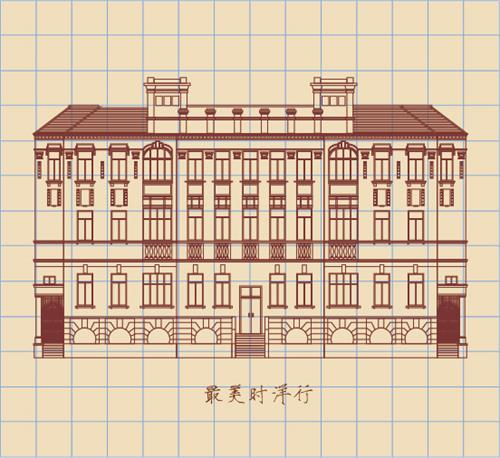

所在街区：江岸区一元路5号 建筑风格：古典主义 建造年代：1921年 现存情况：武汉市档案局

汉口国民政府旧址原为南洋大楼，是南洋华侨简照南、简照强兄弟投资兴建的南洋兄弟烟草有限公司汉口分公司的办公楼。该楼1921年落成，分主附楼。主楼五层，占地面积885平方米，建筑面积4747平方米；附楼四层，占地面积300平方米，建筑面积2000平方米。整座大楼气势宏伟，在当时是汉口的标志性建筑。汉口国民政府外交部旧址。西式古典建筑，混合式结构，地上3层，地下1层，立面对称，居中为柱式门廊建筑外壁以洗麻石粉面，细部有花岗岩雕刻镶嵌；屋顶有回廊、凉亭、拱门、钟楼的造型，富丽典雅。